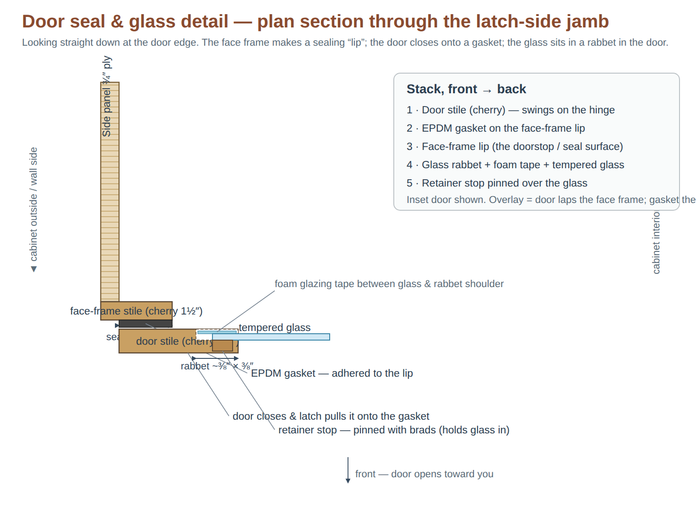

DIY Build Guide — Plywood Climate Cabinet
Wide build, 40" W × 23" D × 85" H (216 cm) · Baltic-birch carcass + cherry frame, built from scratch. Read alongside guitar-cabinet-plan.html (climate/electrical) and cabinet-3d.html (3D layout).
0. Why build it instead of buying a PAX
A home-built plywood box is actually the better choice for a sealed climate vault. The reasons the original plan kept warning about the PAX — raw particleboard that swells and off-gasses in humidity, poor screw holding, a flimsy fiberboard back — all disappear when you build the carcass from ¾" cabinet-grade plywood.
This guide reuses every dimension and zone from the existing 3D model: an open/vented amp zone on the bottom and a sealed vault above, split by a divider shelf. Only the shell changes from IKEA to plywood. All climate, electrical, sealing, and instrument-hanging guidance still lives in guitar-cabinet-plan.html — build the box here, then follow that plan for everything inside it.
The three things that make a vault, not just a cabinet: (1) air-tightness — glue + caulk every interior seam; (2) a real door seal — a continuous gasket plus compression latches, not a magnet; (3) sealing the plywood itself with poly or cedar so the wood doesn't trade moisture with your air. Get the door wrong and the controllers fight the room all day.
1. Target dimensions & construction method
Built around ¾" plywood for the carcass and a ½" plywood back. Joinery is butt joints with glue + pocket screws (Kreg) — no table saw or fancy joinery needed if you let Home Depot rip the sheets to size on their panel saw.
| Measurement | Value | How it's derived |
|---|
| External | 40" W × 23" D × 85" H | 216 cm — fits under an 86.3" / 220 cm ceiling with ~1.3" to spare. |
| Wall thickness | ¾" (carcass), ½" (back) | Standard plywood; far stiffer than 18 mm particleboard. |
| Internal width | 38.5" | 40 − (2 × ¾" sides). |
| Internal depth | 22" | 22.5" carcass depth − ½" back panel. |
| Amp zone (interior) | 38.5 × 22 × 24" H | Open/vented. Clears a 19" bass combo + tube amp. |
| Vault (interior) | 38.5 × 22 × ~58.75" H | Sealed. 85 − top − bottom − divider − amp zone. |
These are nominal. Plywood is rarely a true ¾" (often 23/32" ≈ 0.72"). Measure your actual sheet thickness and adjust the "between the sides" parts before cutting. Measure twice, cut once.
2. Wood selection & material safety
With a sealed box full of valuable instruments, spending more doesn't buy prettier wood — it buys instrument safety: dimensional stability and low off-gassing. Two things attack instruments inside a closed vault:
1. Off-gassing. Cheap sheet goods (MDF, particleboard, melamine) are bonded with urea-formaldehyde, and oil-based finishes emit VOCs. In a sealed box those vapors can fog or check nitrocellulose lacquer finishes — the classic “outgassing” damage. Choose inert, low-emission materials and let finishes cure fully.
2. Wood movement. Humidity swings make wood expand and contract. A solid-wood panel 38" wide can move ¼"+ across the grain seasonally — enough to rack joints and break your air seal.
The counter-intuitive part: don’t “upgrade” the big panels to solid hardwood. Plywood is more dimensionally stable than solid wood because its cross-banded plies cancel that movement out. Use plywood for every large panel; use solid wood only for the narrow door/face frames, where movement is negligible.
| Part | Recommended (instrument-safe tier) | Why |
|---|
| Carcass | Real Baltic birch plywood (13-ply, void-free) — ¾" sides/shelves, ½" back | Strongest, void-free, beautiful edges, very stable. This build’s choice — ordered cut-to-size from a hardwood dealer. |
| Carcass (alt) | Columbia PureBond formaldehyde-free hardwood plywood | Soy-glue, no added formaldehyde — lowest emissions if you can’t source low-formaldehyde Baltic birch. |
| Interior lining | Spanish cedar (¼") | The humidor/case standard: buffers humidity, deters insects, mild instrument-safe aroma, inert resins. |
| Lining (alt) | Basswood | Same buffering with zero smell. |
| Door/face frames | Solid cherry (1×2 face frame, 1×3 door frame) | Narrow members move little — solid wood is right here. Cherry is this build’s pick; maple/walnut/poplar all work. |
| Door glazing | Tempered glass, clear, pencil-polished edges (~37 × 52") | Tempered = strong and breaks safe; the pencil-polished edge has no defects and is safe to handle. Add UV-filtering only if the cabinet sits in direct sun. |
| Finish | Low-VOC water-based poly, fully cured | Avoid oil-based finishes in a sealed box. Let everything off-gas for 1–2 weeks with the climate system running before instruments go in. |
| Door gasket | EPDM or silicone weatherstrip | Not cheap open-cell foam, which off-gasses and compresses permanently. |
Every extra dollar here protects the air and dimensions the instruments live in — not just looks. Baltic birch and cherry are ordered cut-to-size from a hardwood dealer (hand them the §3 list); the Spanish cedar lining and the cut-to-size tempered glass are ordered separately (see §4).
3. Cut list
Construction: the two sides run full height (85"); the top, bottom, and divider are housed between the sides; the back overlays the rear. All carcass parts are ¾" Baltic birch unless noted.
| # | Part | Qty | Dimensions (W × H/D) | Material | Notes |
|---|
| A | Side panel | 2 | 22.5" D × 85" H | ¾" Baltic birch | Full height. Front edge gets the face frame. |
| B | Bottom panel | 1 | 38.5" W × 22.5" D | ¾" Baltic birch | Between sides, at the very bottom. |
| C | Top panel | 1 | 38.5" W × 22.5" D | ¾" Baltic birch | Between sides, at the very top. |
| D | Divider shelf | 1 | 38.5" W × 22.5" D | ¾" Baltic birch | Splits amp zone / vault. Its top face sits 25.5" up from the floor (24" amp clearance + thicknesses). Caulk airtight — this is the vault floor. |
| E | Back panel | 1 | 40" W × 85" H | ½" Baltic birch | Overlays the rear, glued + screwed + caulked. |
| F | Hanger board | 1 | 36" W × 6" H | ¾" Baltic birch | Carries all hung instruments. Screw through the back into this; never hang from a single panel. |
| G | Door stiles (verticals) | 2 | 2.5" × ~57" | Cherry 1×3 | Vault door frame. Trim to the finished vault opening. |
| H | Door rails (horizontals) | 2 | 2.5" × ~35" | Cherry 1×3 | Length = door width − 2 stiles; confirm after assembly. |
| I | Door glazing | 1 | ~37" × 52" | Tempered glass, pencil-polished | Sits in a rabbet, set on foam glazing tape. Clear tempered + pencil-polished edge (~$384 cut to size). Measure the finished door opening before ordering — tempered glass can’t be trimmed. See §2. |
| J | Face frame | 2 stiles (1.5"×85") + 3 rails (1.5"×37") | 1.5" wide | Cherry 1×2 | Frames the front opening; gives the door a flat surface to seal against. |
Parts A–F (the plywood) nest onto two ¾" sheets + one ½" sheet: both sides fit on one ¾" sheet (45" of the 48" width); top/bottom/divider/hanger fit on the second; the back uses one ½" sheet. The cherry (G/H/J) comes from ~4 boards (2× 1×2 8′ + 2× 1×3 8′). Hand the hardwood dealer this whole list cut-to-size; ask them to bore the Ø2" grommet hole in the divider (2.5" from the rear edge) while they’re at it.
4. Shopping list
Prices reflect the recommended instrument-safe tier from §2. A builder-grade version (HD birch ply + aromatic cedar + plain acrylic) costs roughly half and is noted in parentheses.
| Item | Qty | Approx. cost | Notes |
|---|
| ¾" Baltic birch plywood | 2 sheets | $160–240 | 13-ply, void-free carcass (or low-formaldehyde PureBond). Avoid MDF, particleboard & melamine in a humid box of instruments. |
| ½" Baltic birch plywood | 1 sheet | $60–90 | Back panel. |
| Solid cherry — 1×2 & 1×3 (8′ boards) | ~4 boards | $40–110 | Door frame (1×3) + face frame (1×2). Narrow members — solid wood is right here. |
| Spanish cedar lining (¼", ordered online) | ~35–40 sq ft | $120–200
(HD aromatic cedar ~$60–90) | The humidor/case standard: buffers humidity, deters insects, mild instrument-safe aroma. Basswood if you want zero smell. |
| Tempered glass, clear, pencil-polished edges, cut to size | 1 | ~$384 | ~37×52, set on foam glazing tape. Order after the door is built — tempered can’t be trimmed. Add UV-filtering only for a sunny spot. |
| Wood glue + pocket-hole screws | 1 ea | $25 | Kreg screws if pocket-jointing. |
| Paintable acrylic-latex caulk | 2–3 tubes | $12–18 | Low-odor; seals every interior vault seam. |
| 100% silicone, neutral-cure (not acetoxy) | 1 tube | $8 | Beds the glass. Avoid vinegar-smell (acetoxy) silicone — it corrodes strings & frets. |
| Foam glazing tape | 1 roll | $8 | Cushions the glass in the door rabbet. |
| Duct-seal compound (electrician’s putty) | 1 pack | $5 | Re-workable seal packed around cables at the divider grommet. |
| EPDM or silicone weatherstrip | 1 roll | $12–20 | The door gasket — the single most important seal. Avoid cheap open-cell foam (it off-gasses). |
| Compression / draw latches | 2–3 | $20 | Clamp the door against the gasket. Not magnetic catches. |
| Hinges (piano hinge or 3× cabinet hinges) | 1 set | $15–25 | For the vault door. |
| Low-VOC water-based polyurethane + brush | 1 qt | $25 | Seal interior plywood faces that aren't cedar-lined. Cure fully before loading. |
| Cable grommet (1.5–2") | 1 | $8 | Sealed pass-through in the divider. |
| Anti-tip wall brackets + screws | 1 set | $10 | Anchor to studs. An 85" cabinet full of instruments must be tip-proofed. |
| Shell materials subtotal | | ~$885 + ~$384 glass | Climate & electrical gear (fans, humidifier, dehumidifier, controllers, GFCI strip, sensor) are separate. One AC Infinity Controller 79 (the outlet model) can run the fans + humidifier + dehumidifier from a single unit — see the master plan. |
5. Tools
- Drill / driver — the one essential power tool.
- Pocket-hole jig (Kreg) — easiest strong joinery for a beginner; no exposed end screws.
- Clamps (4+) — hold panels square while screwing.
- Caulk gun, tape measure, speed square, pencil.
- Jigsaw — grommet hole, optional amp-zone vents.
- Hole saw sized to your grommet (~1.5–2").
- Circular saw + straightedge — only if you trim parts yourself. If Home Depot rips every panel, you may not need it.
- Sandpaper / sanding block (120 then 220 grit).
Home Depot's panel saw makes straight, square cuts you can't easily do with a handheld saw. Bring the cut list, get the big rips done in-store, and you're left with assembly only.
6. Build steps
- Confirm & cut. Measure your real plywood thickness, finalize the cut list, and have Home Depot rip parts A–F. Label each panel in pencil.
- Sand & pre-finish the vault interior. It's far easier to sand and apply 2 coats of water-based poly to the inner faces before assembly (skip faces you'll cedar-line). Let it cure fully — poly off-gasses, so don't rush instruments in.
- Drill pocket holes. Put pockets on the underside of the bottom, both faces of the divider, and the top, so screws drive into the side panels. Keep pockets on hidden faces.
- Dry-fit. Stand the two sides up, set the bottom, divider, and top between them. Check everything is square (measure both diagonals — equal = square) before any glue.
- Glue & screw the carcass. Bottom first, then divider at the 25.5" line, then top. Glue every joint and drive pocket screws. Re-check square as you go and clamp.
- Attach the back (E). Bead of glue on all rear edges (including the divider's rear edge), set the ½" back on, screw every ~8". The back stiffens the whole box and squares it.
- Mount the hanger board (F) inside the vault, screwed through the back into the panel and into the side panels at the ends, near the top. This is what the instruments hang from.
- Make the airtight pass-through. Hole-saw a grommet hole through the divider toward the back, install the grommet, and run a bead of caulk around it. All vault cabling routes here with a drip loop.
- Caulk every interior vault seam airtight. Sides-to-top, sides-to-divider, back-to-everything. Tool the bead smooth. The amp zone below the divider stays open/vented — don't seal it.
- Line the vault with cedar. Cut the aromatic cedar planks to fit the vault walls + back; attach with brad nails or construction adhesive. Leave the door opening clear.
- Build & hang the vault door. Assemble the poplar frame (G/H) with a rabbet on the inside back edge; drop in the acrylic (I) and retain it with thin stops. Hang on the hinge(s). Add the foam/EPDM gasket around the opening (or the door's back face) and fit 2–3 compression latches so closing the door squeezes the gasket.
- Vent the amp zone. Leave it open, or fit a louvered/grilled door so the tube amp's heat escapes to the room. Never seal the amp zone.
- Anchor it. Stand the cabinet, level it, and screw the anti-tip brackets into wall studs before loading anything.
- Install climate & electrical gear. Now follow
guitar-cabinet-plan.html: fans, humidifier/dehumidifier on the divider, the controller in the amp zone (an AC Infinity Controller 79 runs fans + humidifier + dehumidifier from one outlet-equipped unit; two Inkbirds are the budget alternative), sensor in the vault, GFCI strip, drip loops. Use cabinet-3d.html as the visual map for where each part goes.
- Leak-check & calibrate. Run the system empty for a few days. Salt-calibrate the sensor, set a dead-band between the humidify/dehumidify setpoints so they don't fight, and confirm the vault holds 45–50% RH before the instruments move in.
6A. Building the two cherry frames (step by step)
The carcass is built — these are the two cherry assemblies that finish the front. Build the face frame first (it defines the door opening), then build the vault door to fit the opening you actually end up with.
Tools & supplies
- Pocket-hole jig (Kreg) + 1¼" pocket screws, or dowels/dominoes; wood glue.
- Bar/pipe clamps + a couple of right-angle clamps, a reliable square, tape measure.
- Router + ⅜" rabbeting bit (glass rabbet); sharp chisel.
- Brad/pin nailer (or fine finish nails + punch); sandpaper.
- Piano hinge, 2–3 draw/compression latches, door pull, EPDM gasket, foam glazing tape, neutral-cure silicone, thin cherry stop strips.
Frame A — the face frame (cherry 1×2)
Goal: a flat 40 × 85" “ladder” — 2 stiles (1½ × 85) + 3 rails (1½ × 37) — glued onto the front edges of the carcass. The inner ~¾" of each member overhangs the opening to form the sealing lip / doorstop.
- Mark rail positions from the real box. The top rail sits flush with the top, the bottom rail flush with the bottom, and the middle rail centers on the divider’s front edge — measure that height on your carcass and transfer it. Confirm rails = 37" (40 − two 1½" stiles); trim if your box isn’t exactly 40".
- Drill pocket holes — 2 in each end of each rail, on the back (hidden) face. 12 holes total.
- Glue & assemble flat. On a flat surface, cherry show-face down: glue a rail end, clamp it to the stile with front faces flush, drive the screws. Add all three rails at your marks. Check the diagonals are equal (square) and the frame sits flat; let the glue cure.
- Sand the joints flush; ease the front edges lightly.
- Dry-fit on the carcass. The frame’s outer edges sit flush with the outside faces of the side panels; the inner edges then project ~¾" into the opening (your gasket lip). Adjust if needed.
- Glue it on. Spread glue on the carcass front edges, clamp the frame on with faces aligned, and secure with either pin/brad nails from the front (set & fill with cherry-tint filler) or — cleaner — screws driven from inside the carcass into the back of the frame (no visible holes). Clamp until dry.
- Flush-sand the frame-to-side transition.
Don’t seal over the lip yet — the gasket goes there later. The middle rail is what separates the sealed vault door above from the open amp zone below.
Frame B — the vault door (cherry 1×3 + glass)

- Measure the finished opening in the installed face frame (height between the top and middle rails; width between the stiles). Build the door to this, not the nominal numbers — that’s why the cut list says “~57 / ~35, confirm at assembly.”
- Choose inset or overlay. Inset (cleaner furniture look): door ~⅛" smaller than the opening all around, gasket on the face-frame lip. Overlay (easiest to seal): door ~¾–1" larger so it laps the face frame, gasket on the door’s back face. Cut the stiles & rails to suit your choice.
- Joinery. Join into a rectangle with glue + 2 pocket screws per corner (or stronger: half-lap / mortise-and-tenon / dowels). Clamp dead-flat and square (equal diagonals); cure. A racked door will never seal.
- Rout the glass rabbet. On the inside back edge, run a ~⅜" × ⅜" rabbet all the way around with the rabbeting bit; square the rounded corners with a chisel.
- Dry-fit the glass. The tempered pane should drop into the rabbet with ~1/16–⅛" clearance. It can’t be trimmed, so confirm the fit before finishing.
- Finish now. Sand and apply low-VOC water-based poly to the cherry while the glass is out; let it cure.
- Glaze. Lay foam glazing tape in the rabbet, set the glass onto it (don’t force it), and retain with thin cherry stops pinned with brads — or a light bead of neutral-cure silicone. Leave a slight cushion; never clamp the glass rigidly.
- Hang it. Mount the piano hinge to the door’s hinge stile and the face frame; pre-drill, hang, and check for an even gap and free swing.
- Gasket, pull & latches. Adhere the EPDM gasket (on the lip for inset, on the door back for overlay). Fit the pull. Add 2–3 draw/compression latches on the strike side and adjust them until closing the door visibly compresses the gasket all around.
- Seal-check. Close it and verify even compression everywhere; tweak the latch keepers / hinge. This is the seal your whole climate system depends on.
Tempered glass rule: order it only after the door is built and the rabbet measured — tempered can’t be cut. Use neutral-cure silicone, never acetoxy (vinegar smell), anywhere near the instruments.
7. Where this leaves the IKEA plan
Everything in the master plan still applies except Sections about the PAX frame itself:
- Replaces: the IKEA frame, its particleboard screw-holding warnings, and the fiberboard back. Plywood holds screws well and the back is structural — though you should still hang instruments from the dedicated hanger board (F), not a lone panel.
- Unchanged: the open-amp-zone / sealed-vault architecture, the divider, sealing approach, door gasketing, thermal isolation of the tube amp, the humidifier/dehumidifier dead-band, fans, sensor, GFCI power, and all instrument dimensions. Build the box here, run the plan there.
One honest trade-off: a DIY build is more work and more skill than assembling flat-pack furniture — the door seal in particular takes patience to get airtight. The payoff is a box that's structurally and dimensionally far better for holding a stable climate, at a comparable material cost.